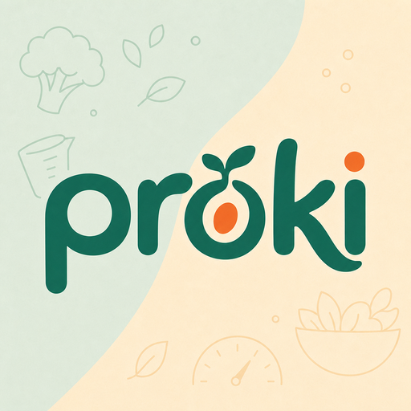

Le prime settimane da vegano sono un labirinto: cosa sostituire, dove prendere le proteine, come cucinare ingredienti che non hai mai usato. Le informazioni sono sparse ovunque: Proki le mette in un posto solo e ti accompagna, finché il nuovo modo di mangiare diventa semplicemente il tuo.
Proki non l'ha pensata un'azienda. L'ha costruita qualcuno che è diventato vegano e si è perso nelle prime settimane: nessun manuale chiaro, informazioni ovunque, e la sensazione che mollare fosse più facile che continuare. Questa è l'app che sarebbe servita allora.
Sei tu il motivo per cui Proki esiste. Una guida che ti prende per mano: cosa sostituire, come arrivare alle proteine, come usare gli ingredienti nuovi. Un passo alla volta, finché diventa naturale.
Anche per te. Tieni le macro sotto controllo, scopri ricette nuove ad alto contenuto proteico e smetti di chiederti se stai prendendo abbastanza. Gli strumenti restano, l'ansia no.
Il manuale chiaro che manca quando inizi: sostituzioni, proteine, ferro, B12, come usare ogni ingrediente. Calibrato sul punto in cui sei, un passo alla volta.
Proteine, carboidrati, grassi e calorie. Imposta i tuoi obiettivi, registra un pasto in pochi tap, vedi i progressi in tempo reale.
Decine di ricette vegetali filtrate per contenuto proteico. Macro calcolate, pronte da aggiungere al diario con un tocco.
Inserisci il tuo peso e Proki calcola il fabbisogno proteico da atleta, in grammi per chilo. Niente numeri a caso.
Le migliori fonti proteiche vegetali, come usarle, cosa sostituiscono. Una guida pratica sempre in tasca.
Mangiavi questo? Ecco l'alternativa vegetale con le stesse proteine. Smetti di cercare su dieci siti diversi: la risposta è già qui.
Dicci come mangi e quanto pesi. Calcoliamo il tuo fabbisogno proteico e ti lasciamo regolare le altre macro.
Scegli da ingredienti e ricette, o crea i tuoi. L'anello si aggiorna a ogni pasto.
Vedi i progressi giorno per giorno e arrivi a sera sapendo di aver fatto sul serio.

L'app è già live in Italia. Diario delle macro, ricette ad alto contenuto proteico e la guida alla transizione: tutto pronto, gratis, a un tap di distanza.
Scarica su App Store